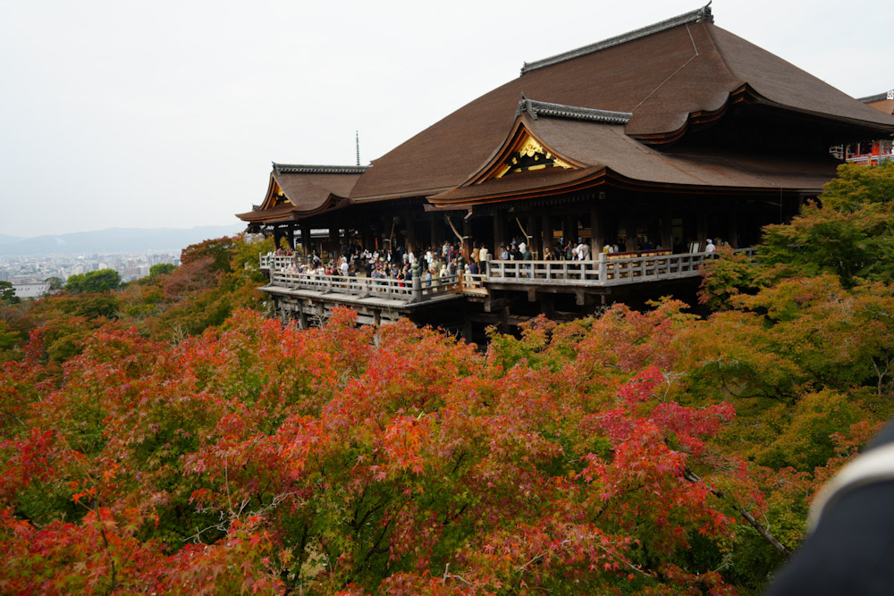
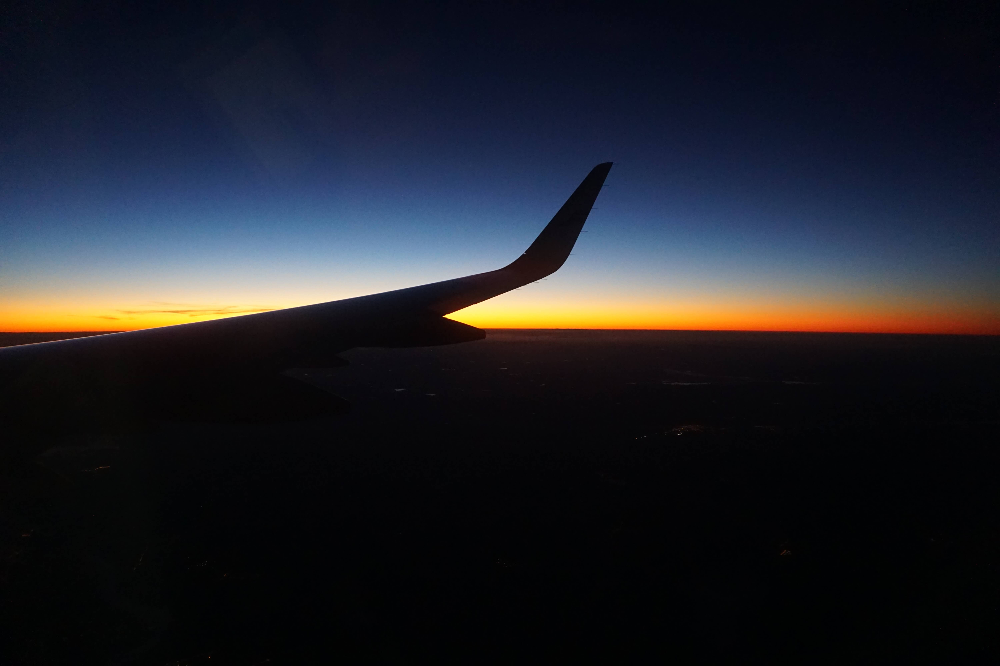

01
PHOTOGRAPHS & FIELD NOTES
旅の輪郭を、 写真でたどる。
Tracing the shape of a journey, frame by frame.
01 — INTRODUCTION
見た景色を、
忘れないために。
A visual journal of places, people, and the moments in between.
旅先で出会った光、建築、食、そして移動の記憶。
写真を中心に、次の旅にも役立つ小さな記録を残しています。
Photographs and practical notes from journeys near and far — collected slowly, shared simply.
02 — JOURNEYS
旅の記録 Selected journeys
04 COUNTRIES
4つの旅先
03 — TRAVEL MAP
旅した場所を、
ひとつの地図へ。
点と点を結ぶと、旅の記憶がひとつの線になる。
Every pin holds a story. Follow the map, revisit the frame.
Map data: Natural Earth — Public Domain